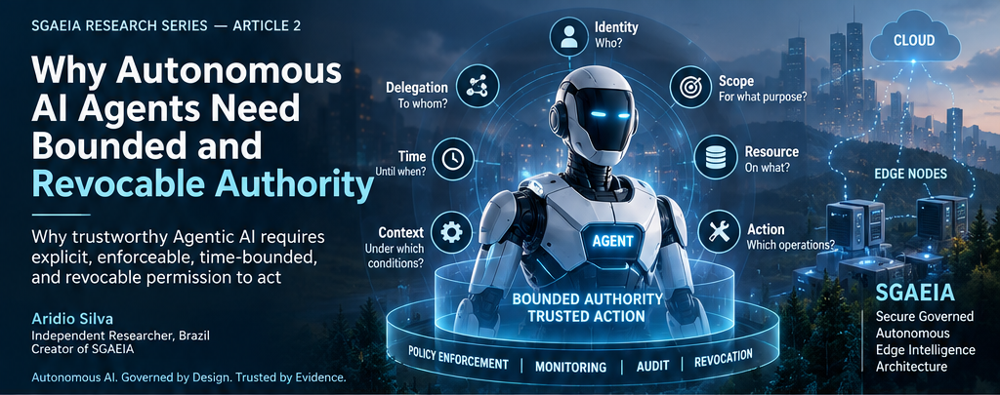
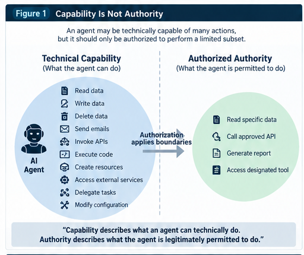
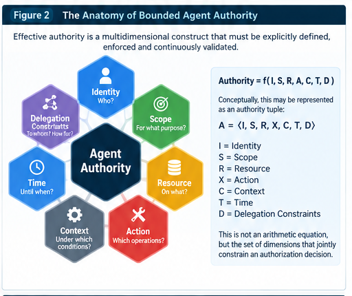
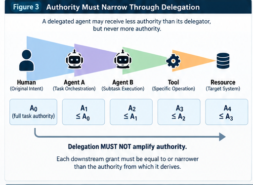
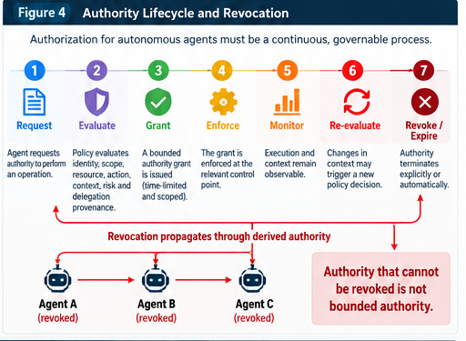

Abstract
This article develops bounded and revocable authority as a foundational security property for autonomous AI systems. It distinguishes technical capability from legitimate authority and argues that authority must be explicit, scoped, contextual, time-bounded, externally enforceable, traceable, and revocable across delegation chains.
Keywords: Agentic AI; autonomous agents; bounded authority; revocation; Zero Trust; authenticated delegation; AI governance; SGAEIA.
SGAEIA Research Series — Article 2
Why Autonomous AI Agents Need Bounded and Revocable Authority
Why trustworthy Agentic AI requires explicit, enforceable, time-bounded, and revocable permission to act
Aridio Silva
Independent Researcher, Brazil Creator of SGAEIA — Secure Governed Autonomous Edge Intelligence Architecture

File:
sgaeia-article2-cover.png
Bounded authority constrains what an autonomous AI agent may legitimately do across identity, scope, resources, actions, context, time, and delegation.
Introduction — Autonomy Changes the Meaning of Access
For decades, access control has been built around a relatively stable question:
Who is allowed to access what?
Autonomous AI agents make that question insufficient.
Modern agentic systems can plan, invoke tools, chain actions across systems, access data, execute workflows, delegate subtasks, and operate with less direct human intervention than traditional software components. These characteristics create new authorization, accountability, and access-control challenges, particularly when agents act on behalf of users or other agents. [1], [2]
As autonomy increases, security is no longer only about preventing unauthorized access to information.
It is also about controlling the authority to act.
An authenticated agent may have a valid identity. A properly authenticated request may originate from a legitimate system component.
Neither fact alone establishes that the agent should be permitted to perform a specific action against a specific resource at a specific time.
The security question therefore changes from:
Who is this agent?
to:
What is this agent legitimately authorized to do, on whose behalf, under which conditions, for how long, and how can that authority be withdrawn?
This article develops bounded and revocable authority as a foundational security property for autonomous AI systems and as a core architectural principle of SGAEIA — Secure Governed Autonomous Edge Intelligence Architecture. [3]
The central argument is straightforward:
Autonomy without bounded authority can transform useful capability into uncontrolled privilege.
1. Capability Is Not Authority
An AI agent may technically be capable of performing many actions.
It may be able to query databases, read documents, call APIs, send messages, modify records, create resources, execute code, invoke external services, or delegate work to another agent.
These are capabilities.
Authority is different.
Capability describes what an agent can technically do. Authority describes what the agent is legitimately permitted to do.
This distinction is critical because technical capability frequently exceeds the authority that should be granted for a particular task.
Consider an agent connected to a corporate email system. Its integration may expose operations for reading, sending, deleting, forwarding, labeling, and searching messages.
A task such as:
“Find the invoices received this week and summarize them.”
does not imply permission to delete messages, forward attachments, modify mailbox configuration, or send new emails.
Giving an agent access to an API therefore cannot be equivalent to granting unrestricted authority over that API.
Recent industry security guidance for AI agents similarly recommends dedicated agent identities, task-based least-privilege roles, resource and action scoping, controlled tool access, and end-to-end auditability. Microsoft’s guidance also warns that multiple individually reasonable permissions can combine into broader effective authority when agents operate across several systems. [4]
This leads to the first SGAEIA principle:
SGAEIA Principle 1 — Capability MUST NOT imply authority.
A governed agentic system must distinguish between the actions technically available to an agent and the subset legitimately authorized within the current execution context.

File:
sgaeia-article2-figure1-capability-vs-authority.png
Figure 1 — Capability Is Not Authority. Technical capability represents what an agent can do; bounded authority defines the subset of actions the agent is legitimately permitted to perform.
2. Why Traditional Authorization Is Not Enough
Traditional Identity and Access Management systems were largely designed around human users, applications, services, and comparatively stable roles.
Agentic systems introduce a different operating model.
An autonomous agent may receive a task from a human, determine a plan dynamically, invoke multiple tools, create intermediate tasks, communicate with other agents, and act across several administrative or infrastructure boundaries.
The resulting authority path may look like:
Human → Agent A → Agent B → Tool → Service → Resource
South et al. identify authorization, accountability, and access control in task delegation as urgent challenges for autonomous AI agents and argue for authenticated and auditable delegation with clear chains of accountability. Their proposed direction extends existing authentication and authorization infrastructure, including OAuth 2.0 and OpenID Connect, toward agent-specific delegation. [1]
Traditional authorization remains necessary.
But multi-agent systems introduce additional questions:
Who originally authorized the operation?
Which part of that authority was delegated?
Was the receiving agent allowed to delegate again?
Did authority become broader during delegation?
Has the originating grant expired?
Was it revoked?
Does the final tool invocation still correspond to the original authorized task?
Can the complete authority chain be reconstructed afterward?
These questions suggest that authority in agentic systems should not be modeled merely as a static role attached to an identity.
It must become a runtime-governed security object.
3. The Anatomy of Bounded Agent Authority
SGAEIA represents effective agent authority as a multidimensional construct:
Authority = Identity + Scope + Resource + Action + Context + Time + Delegation Constraints
This expression is conceptual rather than arithmetic. [3]
A more formal representation is:
A = ⟨ I, S, R, X, C, T, D ⟩
where:
- I = Identity
- S = Scope
- R = Resource
- X = Action
- C = Context
- T = Time
- D = Delegation Constraints
Identity
Which agent is attempting the action?
An autonomous agent should have a distinguishable identity so that authorization decisions and evidence can be associated with the actual actor rather than an ambiguous shared credential.
Scope
For which task, workflow, tenant, domain, or operational purpose was authority granted?
Resource
Which resources may the agent affect?
Permission to access one repository should not silently become authority over every repository reachable through the same integration.
Action
Which operations are permitted?
Read, write, execute, delete, export, approve, deploy, transfer, and delegate are materially different authorities.
Context
Under which runtime conditions is the authorization valid?
Context may include workflow state, environment, security posture, risk level, data classification, transaction value, location, or other policy-relevant information.
Time
When does authority begin, and when does it expire?
Temporary tasks should not automatically create permanent privilege.
Delegation Constraints
May the agent transfer any portion of its authority?
If so, to whom, which subset, for how long, and with what right to delegate further?
These dimensions transform a broad statement such as:
“Agent A has access to System X”
into a substantially more precise statement:
“Agent A may execute Action Y against Resource Z, within Scope S, under Context C, until Time T, and may delegate only subset D under defined constraints.”
That difference is the essence of bounded authority.

File:
sgaeia-article2-figure2-anatomy-bounded-authority.png
Figure 2 — The Anatomy of Bounded Agent Authority. SGAEIA models authority as a multidimensional construct jointly constrained by identity, scope, resource, action, context, time, and delegation constraints.
4. Authority Must Be Contextual and Time-Bounded
An authorization decision valid yesterday may not be valid now.
Even one granted minutes earlier may cease to be appropriate when operational context changes.
NIST Zero Trust Architecture rejects implicit trust based solely on physical or network location or asset ownership. It treats authentication and authorization as discrete functions performed before access to enterprise resources is established and shifts protection from network segments toward users, assets, and resources. [5]
SGAEIA extends this resource-centric and explicitly authorized security posture to the runtime authority lifecycle of autonomous agents.
Consider an infrastructure-management agent authorized to remediate a specific service failure.
The agent may legitimately receive temporary write authority for the affected service.
It does not follow that it should retain that privilege after remediation is complete.
Likewise, a financial agent authorized to prepare a transaction should not automatically receive authority to approve or execute it.
A temporary task should normally imply temporary authority.
Recent AI-agent least-privilege guidance recommends time-limited entitlements, just-in-time elevation, narrowly scoped roles, controlled tool access, and re-checking authorization in downstream systems. [4]
This leads to the second SGAEIA principle:
SGAEIA Principle 2 — Authority SHOULD be scoped to the smallest practical combination of task, resource, action, context, and time.
For autonomous systems, least privilege therefore becomes more than a count of permissions.
It becomes least authority for the current purpose.
5. Delegation Must Not Amplify Authority
Multi-agent systems make authorization considerably more complex because authority can propagate.
Suppose a human grants authority A₀ to Agent 1.
Agent 1 delegates part of its task to Agent 2.
Agent 2 delegates a specialized operation to Agent 3.
Conceptually:
Human → Agent 1 → Agent 2 → Agent 3
A secure delegation model should prevent authority from expanding merely because another agent entered the chain.
SGAEIA therefore proposes the invariant:
Rather than representing authority as a simple mathematical set, SGAEIA uses a no-broader-than relation:
A_delegated ≼ A_delegator
where ≼ means that the delegated authority is no broader than the delegator’s effective authority across the governed authority dimensions.
For a delegation chain:
A₃ ≼ A₂ ≼ A₁ ≼ A₀
Each downstream delegation may preserve or attenuate authority, but it must not create authority that the delegating principal did not legitimately possess.
This is consistent with South et al.’s requirement for authenticated, scoped, and accountable delegation, while SGAEIA makes non-amplification of delegated authority an explicit architectural invariant. [1], [3]
If Agent A may only read a customer record, delegating a subtask to Agent B cannot legitimately give Agent B authority to modify it.
If Agent A has authorization valid for ten minutes, a dependent Agent B should not receive a derived grant valid for a day.
If Agent A cannot export data, delegation should not become a path for Agent B to bypass that restriction.
Delegation must preserve the boundaries from which the delegated authority derives.

File:
sgaeia-article2-figure3-delegation-narrowing.png
Figure 3 — Authority Must Narrow Through Delegation. Each downstream grant must remain equal to or narrower than the effective authority from which it derives. In SGAEIA, delegation must not amplify authority.
6. The Authority Amplification Problem
Authority may also expand through composition.
Imagine that an agent independently has:
- read access to internal documents,
- access to a data-transformation tool,
- access to an external messaging system.
Each permission may appear low risk when examined independently.
Together, they may create the effective capability to retrieve internal information, transform it, and transmit it outside the organization.
Microsoft’s 2026 agent-security guidance highlights this problem: access across email, files, ticketing, source-code repositories, and other systems can combine into broader effective permissions than teams evaluated at each individual integration. [4]
OWASP’s Top 10 for Agentic Applications for 2026 likewise frames autonomous-agent security around risks arising when agents plan, act, invoke tools, and interact across complex workflows. [8]
Bounded authority therefore cannot be evaluated exclusively permission by permission.
The architecture must also reason about the composition of authority across an executable action chain.
This produces another SGAEIA principle:
SGAEIA Principle 3 — Effective authority SHOULD be evaluated across the complete executable action chain, not only at individual permission boundaries.
The security consequence of several individually acceptable actions may be an unacceptable composite action.
7. Revocation Is a Runtime Security Requirement
Authorization architectures often focus on granting access.
Autonomous systems require equal attention to withdrawing authority.
Suppose an agent receives legitimate authority to perform a task.
Ten minutes later:
- the user cancels the operation,
- the agent begins behaving anomalously,
- a credential is suspected of compromise,
- the risk classification changes,
- policy changes,
- the delegating principal loses authority,
- the underlying task is complete.
The original authority should not continue merely because it was valid when issued.
This produces one of the central propositions of the SGAEIA authority model:
Authority that cannot be revoked is not bounded authority.
Revocation is therefore not merely an administrative cleanup mechanism.
It is a runtime security requirement.
Recent agent-security guidance recommends lifecycle management from the outset, including credential rotation, suspension and decommissioning procedures, fast shutdown mechanisms, expiry mechanisms, downstream authorization re-checks, and revocation testing. [4]
The OWASP Agent Control Standard similarly states that agents should be inspectable, traceable, and instrumentable, with mechanisms enabling runtime behavioral control and declarative policy enforcement across agent platforms. [6]
8. Revocation Must Follow Delegation
Revocation becomes harder after authority has propagated.
Consider:
Human → Agent A → Agent B → Agent C
Suppose Agent A’s authority is revoked.
What happens to Agent B?
What happens to Agent C?
If their authority was derived exclusively from Agent A, allowing those grants to survive could defeat the purpose of revocation.
SGAEIA therefore proposes:
SGAEIA Principle 4 — Revocation SHOULD propagate across authority derived exclusively from the revoked grant.
If:
A_B ≼ A_A
and:
A_C ≼ A_B
then invalidating the root authority from which those dependent grants derive should invalidate the dependent chain, subject to explicitly modeled independent grants.
This qualification matters.
An agent may possess authority from multiple legitimate sources.
Revoking one delegation should not necessarily invalidate a separate, independently authorized grant.
The architecture must therefore know where authority came from.
That makes authority provenance a first-class security requirement.
Authenticated delegation research emphasizes the importance of clear accountability chains and traceable delegation relationships. [1]
9. From Access Control to Authority Lifecycle Management
A traditional authorization sequence is often represented as:
Request → Authenticate → Authorize → Allow / Deny
For autonomous systems, SGAEIA proposes a richer lifecycle:
Request → Evaluate → Grant → Enforce → Monitor → Re-evaluate → Revoke / Expire
Request
An agent requests authority to perform an operation.
Evaluate
Policy evaluates identity, scope, resource, action, context, risk, delegation provenance, and other constraints.
Grant
A bounded authority grant is issued.
Enforce
The grant is enforced at the relevant policy enforcement point.
Monitor
Execution and surrounding conditions remain observable.
Re-evaluate
Material changes in context may trigger a new policy decision.
Revoke or Expire
Authority terminates explicitly or automatically.
This lifecycle transforms authorization from a one-time gateway decision into a continuously governable security process.
The model is a SGAEIA architectural construct, but it aligns with the NIST AI Risk Management Framework’s broader treatment of AI risk management as an ongoing process across the AI lifecycle. NIST AI RMF 1.0 defines the GOVERN, MAP, MEASURE, and MANAGE functions as the core of its risk-management structure. [7]
SGAEIA applies this continuous-governance perspective specifically to the operational authority exercised by autonomous agents.

File:
sgaeia-article2-figure4-authority-lifecycle-revocation.png
Figure 4 — Authority Lifecycle and Revocation. SGAEIA treats authorization as a governable runtime lifecycle: Request → Evaluate → Grant → Enforce → Monitor → Re-evaluate → Revoke/Expire. Revocation may propagate through exclusively derived authority.
10. Enforcement Must Be Independent of Agent Intent
A crucial architectural consequence follows:
An agent cannot be the ultimate authority over its own authorization boundaries.
Prompt instructions such as:
“Do not delete files.”
or:
“Only access documents related to this task.”
may be useful behavioral constraints.
They are not equivalent to enforceable authorization controls.
Prompt-level instructions can be affected by conflicting goals, prompt injection, tool metadata manipulation, workflow drift, or unexpected tool composition.
Recent industry guidance explicitly warns against relying on prompts or narrative expectations such as “the agent will only do X” in place of hard authorization boundaries. [4]
OWASP’s Agent Control Standard provides a complementary architectural direction through middleware hooks and declarative policies that can support portable runtime enforcement across agent frameworks. [6]
This leads to another SGAEIA principle:
SGAEIA Principle 5 — Authority boundaries MUST be externally enforceable and MUST NOT depend solely on the agent’s willingness to obey them.
This is the difference between a behavioral instruction and a security control.
11. Every Exercise of Authority Should Leave Evidence
A secure authority model should answer more than whether an operation succeeded.
It should be possible to reconstruct:
- Who acted?
- On whose behalf?
- Under which authority?
- Against which resource?
- Which action was performed?
- Which policy authorized it?
- What was the runtime context?
- Was authority delegated?
- From whom?
- What evidence demonstrates that the action remained within its authorized boundary?
This connects bounded authority directly to another SGAEIA concept:
Evidence-as-Code. [3]
A governed runtime should produce machine-verifiable evidence associated with security-relevant actions rather than relying only on retrospective explanations.
Recent agent-security guidance recommends end-to-end auditability sufficient to reconstruct what happened, under which identity and effective permissions, against which resources, and with what downstream effects. [4]
SGAEIA expresses this as:
SGAEIA Principle 6 — Every security-relevant exercise of agent authority SHOULD produce verifiable evidence sufficient to reconstruct its authorization provenance and execution context.
Auditability therefore becomes an architectural property, not merely an after-the-fact reporting activity.
12. Bounded Authority in Distributed Edge Environments
The authority problem becomes more difficult at the edge.
Edge Intelligence and Edge AI move AI computation away from purely centralized cloud or data-center environments and toward network-edge infrastructure and devices. Literature in the field highlights distributed architectures, constrained resources, heterogeneous environments, and operational challenges involved in training and inference near the edge. [9], [10]
A governed Edge AI environment may therefore involve:
- heterogeneous hardware,
- resource-constrained devices,
- multiple administrative domains,
- local execution,
- cloud-edge coordination,
- intermittent or degraded connectivity,
- autonomous agents operating with partial local context.
Centralized authorization alone may not always be sufficient for every runtime decision.
An edge agent may need to continue operating when communication with a central governance component is delayed or unavailable.
This creates a fundamental tension:
How can an agent remain operationally autonomous without becoming independently authoritative?
SGAEIA addresses this by separating operational autonomy from unbounded authority. [3]
An agent may continue operating autonomously within a valid authority envelope while remaining unable to expand that envelope merely because central connectivity is unavailable.
This yields another SGAEIA principle:
SGAEIA Principle 7 — Local autonomy MAY continue within previously valid authority boundaries, but local authority expansion SHOULD require an explicitly authorized mechanism.
The objective is resilience without converting network partitions, edge isolation, or degraded connectivity into implicit security exceptions.
13. Security Invariants for Agent Authority
The concepts developed above can be summarized as a set of architectural propositions and invariants.
Within SGAEIA, a governed autonomous agent should satisfy the following properties:
Delegation MUST NOT amplify authority.
- Capability MUST NOT imply authority.
- Authority MUST have explicit boundaries.
- Delegation MUST NOT amplify authority.
- Delegated authority MUST be no broader than the authority from which it derives.
- Authority SHOULD be contextual and time-bounded.
- Effective authority SHOULD be evaluated compositionally across action chains.
- Authority boundaries MUST be externally enforceable.
- Authority SHOULD be revocable.
- Revocation SHOULD propagate through exclusively derived authority.
- Authority provenance SHOULD remain traceable.
- Security-relevant exercises of authority SHOULD produce verifiable evidence.
These are SGAEIA architectural propositions, not quotations from the referenced standards or papers.
They synthesize established security principles—least privilege, Zero Trust, authenticated delegation, runtime enforcement, auditability, and continuous risk management—into a model intended specifically for autonomous distributed multi-agent systems. [1], [3], [5], [6], [7]
14. From Bounded Authority to Authenticated Delegation
Bounding authority solves only part of the problem.
Once an agent is allowed to delegate some of its authority to another agent, additional questions emerge.
How does the receiving agent verify that the delegation is authentic?
How is the delegating principal identified?
How is the original human or organizational authority preserved?
How can a downstream service distinguish direct authority from delegated authority?
How can an authority chain be represented in a verifiable form?
How should delegation constraints survive multiple hops?
These questions move us from bounded authority to authenticated delegation.
South et al. argue that authenticated and auditable delegation is a critical component of agent governance and explore how established web authentication and authorization mechanisms can be extended with agent-specific credentials and robust scoping rules. [1]
That subject deserves separate treatment.
It will be addressed later in this series in:
Authenticated Delegation Between Autonomous AI Agents
Before that, the next article will examine the broader security model within which these authority decisions operate:
Zero Trust for Multi-Agent AI Systems
Conclusion
The security of autonomous AI cannot be reduced to determining whether an agent is authenticated.
Identity answers:
Who is acting?
Authority must additionally answer:
What may this agent do, against which resources, under which conditions, for how long, on whose behalf, and with what right to delegate?
As agents become capable of increasingly consequential operations, the distinction between capability and authority becomes fundamental.
A trustworthy autonomous system should not rely on the assumption that an agent will voluntarily remain within its intended boundaries.
Those boundaries must be explicit.
They must be enforceable.
They must survive delegation.
They must be observable.
And they must be revocable.
The architectural challenge is therefore not to eliminate autonomy.
It is to make autonomy governable.
Autonomous agents need enough authority to act — but never unlimited authority to decide the boundaries of their own authority.
That principle lies at the heart of SGAEIA’s approach to governed autonomous intelligence.
Autonomous AI. Governed by Design. Trusted by Evidence.
References
[1] South, T., Marro, S., Hardjono, T., Mahari, R., Whitney, C. D., Chan, A., & Pentland, A. (2025). Position: AI Agents Need Authenticated Delegation. Proceedings of the 42nd International Conference on Machine Learning, Proceedings of Machine Learning Research, 267, 82211–82231. https://proceedings.mlr.press/v267/south25a.html
[2] Chhabra, A., Datta, S., Nahin, S. K., & Mohapatra, P. (2026). Agentic AI Security: Threats, Defenses, Evaluation, and Open Challenges. IEEE Access, 14, 49455–49482. DOI: 10.1109/ACCESS.2026.3675554. https://doi.org/10.1109/ACCESS.2026.3675554
[3] Silva, Aridio. (2026). SGAEIA — Secure Governed Autonomous Edge Intelligence Architecture. Research Artifact. Zenodo. DOI: 10.5281/zenodo.22557796. https://doi.org/10.5281/zenodo.22557796
[4] Yser, Y., & Kohlenberg, T. (2026). Least privilege for AI agents: Identity, access, and tool binding. Microsoft Security Blog, July 16, 2026. https://www.microsoft.com/en-us/security/blog/2026/07/16/least-privilege-for-ai-agents-identity-access-and-tool-binding/
[5] Rose, S., Borchert, O., Mitchell, S., & Connelly, S. (2020). Zero Trust Architecture. NIST Special Publication 800-207. DOI: 10.6028/NIST.SP.800-207. https://doi.org/10.6028/NIST.SP.800-207
[6] OWASP GenAI Security Project. (2026). Agent Control Standard (ACS). September 1, 2026. https://genai.owasp.org/resource/agent-control-standard-acs/
[7] Tabassi, E. (2023). Artificial Intelligence Risk Management Framework (AI RMF 1.0). NIST AI 100-1. DOI: 10.6028/NIST.AI.100-1. https://doi.org/10.6028/NIST.AI.100-1
[8] OWASP GenAI Security Project. (2025). OWASP Top 10 for Agentic Applications for 2026. December 9, 2025. https://genai.owasp.org/resource/owasp-top-10-for-agentic-applications-for-2026/
[9] Zhou, Z., Chen, X., Li, E., Zeng, L., Luo, K., & Zhang, J. (2019). Edge Intelligence: Paving the Last Mile of Artificial Intelligence With Edge Computing. Proceedings of the IEEE, 107(8), 1738–1762. DOI: 10.1109/JPROC.2019.2918951. https://doi.org/10.1109/JPROC.2019.2918951
[10] Singh, R., & Gill, S. S. (2023). Edge AI: A survey. Internet of Things and Cyber-Physical Systems, 3, 71–92. DOI: 10.1016/j.iotcps.2023.02.004. https://doi.org/10.1016/j.iotcps.2023.02.004
Research & Project Resources
SGAEIA — Secure Governed Autonomous Edge Intelligence Architecture
GitHub: https://github.com/aridiosilva/SGAEIA
Archived Research Artifact — SGAEIA v0.3.4
https://doi.org/10.5281/zenodo.22557796
Author
Aridio Silva ORCID: https://orcid.org/0009-0008-2411-6995
SGAEIA Research Series
Previous article:
From Edge AI to Governed Autonomous Edge Intelligence [INSERT PERMANENT MEDIUM URL]
Current article:
Why Autonomous AI Agents Need Bounded and Revocable Authority
Next article:
Zero Trust for Multi-Agent AI Systems Forthcoming
About the Author
Aridio Silva is an independent researcher whose current work focuses on Agentic AI, distributed Multi-Agent Systems, Edge AI, AI Security, Zero Trust, continuous GRC, and trustworthy autonomous systems.
He is the creator of SGAEIA — Secure Governed Autonomous Edge Intelligence Architecture, an open and vendor-neutral reference architecture investigating how autonomous AI agents can operate with bounded authority, authenticated delegation, runtime policy enforcement, continuous assurance, and verifiable security evidence.
Autonomous AI. Governed by Design. Trusted by Evidence.
License
Except where otherwise noted, the text and original conceptual diagrams in this article are licensed under the Creative Commons Attribution 4.0 International License (CC BY 4.0).
© 2026 Aridio Silva. You may share and adapt this work for any purpose, provided appropriate attribution is given.
Series continuity
- From Edge AI to Governed Autonomous Edge Intelligence
- Why Autonomous AI Agents Need Bounded and Revocable Authority
- Zero Trust for Multi-Agent AI Systems
- Authenticated Delegation Between Autonomous AI Agents
Suggested citation
Silva, Aridio. (2026). Why Autonomous AI Agents Need Bounded and Revocable Authority. Zenodo. https://doi.org/10.5281/zenodo.22715664
Full article on Medium: Read the full article on Medium
This open page provides the complete English author manuscript for reading without a Medium membership. Zenodo remains the persistent source for the archival file, version, license, and citation record.